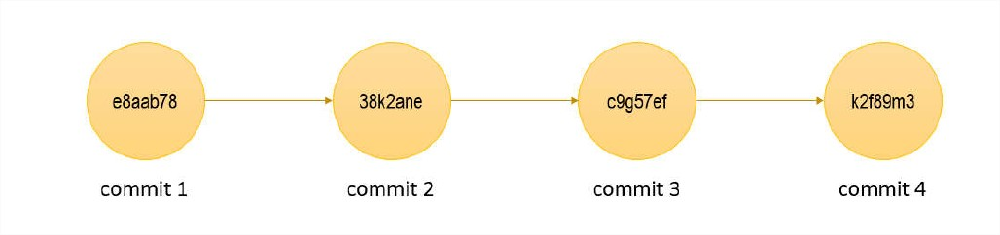
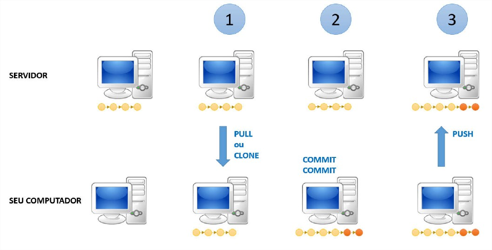
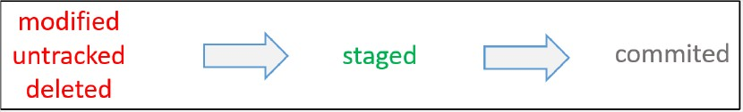
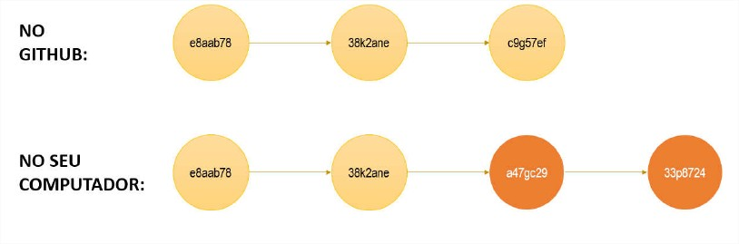

-O que é o Git?
Git é um sistema de controle de versões distribuído, usado principalmente no desenvolvimento de software, mas pode ser usado para registrar o histórico de edições de qualquer tipo de arquivo
Objetivo geral:
- Oferecer um breve nivelamento sobre aspectos teóricos e procedimentos básicos de Git e Github necessários para acompanhar os projetos do curso.
- Vamos abordar: usuário único / branch único
O que é Git e Github?
GIT - é um sistema de versionamento: você controla as modificações de um projeto por meio de versões chamadas "commits".

Um projeto controlado pelo Git é chamado de repositório de versionamento. Tipicamente uma cópia "oficial" do repositório fica salvo em um servidor (repositório remoto). Cada pessoa que trabalha no projeto pode fazer uma cópia do repositório para seu computador (repositório local). A pessoa então faz suas alterações no projeto (novos commits) e depois salva as alterações no servidor.

Operações principais:
| CLONE | Copia o repositório remoto para seu computador |
| PULL | Atualiza seu repositório local em relação ao repositório remoto |
| COMMIT | Salva uma nova versão (tipicamente no seu repositório local) |
| PUSH | Envia o repositório local para o repositório remoto |
- É preciso ter um sistema Git instalado em seu computador
- O Git pode ser usado por ou por terminal de comando, ou por um aplicativo gráfico.
- Possui uma interface gráfica web: github.com
- É uma plataforma social (usuários, página de perfil, seguidores, colaboração, etc.). Dica: currículo!
- Maior serviço do mundo de hospedagem de projetos de código aberto
- Modelo de cobrança: gratuito para projetos de código aberto, pago para projetos privados
- Alternativas: BitBucket, GitLab, etc.
Download: https://git-scm.com
Opções recomendadas:
- Use Vim as Git's default editor
- Use Git from the Windows Command Prompt
- Use the OpenSSL library
- Checkout Windows-style, commit Unity-style line endings
- Use MinTTY
- DESMARCAR: Enable Git Credential Manager
ATENÇÃO USUÁRIOS WINDOWS: configurar o sistema para mostrar extensões de arquivos
Painel de controle -> Opções de pasta -> Modo de exibição
Desmarcar "Ocultar as extensões de tipos de arquivos conhecidos"
Passos:
1. Crie um novo projeto no seu ambiente de desenvolvimento
2. Crie um novo repositório no Github
a. ATENÇÃO: se seu ambiente de desenvolvimento não gera o arquivo .gitignore automaticamente, escolha o seu tipo desejado de .gitignore na tela de criação de repositório do Github
3. Abra um terminal na pasta do seu projeto
4. IMPORTANTE: certifique-se de estar identificado no Git do seu computador (nome e email)
- git config --list
- git config --global user.name "Nelio Alves"
- git config --global user.email "acenelio@gmail.com"
5. Faça os comandos a seguir
| git init | Inicia um novo repositório local na pasta do seu projeto |
| git remote add origin https://github.com/acenelio/meuprojeto.git ATENÇÃO: troque pelo caminho do seu repositório do Github | Associa seu repositório local ao repositório remoto, com o apelido de "origin" |
| git pull origin master ATENÇÃO: este comando só é necessário se você criou o .gitignore pelo | Atualiza seu repositório local em relação ao repositório remoto |
| git status | Verifica arquivos |
| git add . | Adiciona todos arquivos ao stage |
| git commit -m "Projeto criado" | Salva uma nova versão do projeto |
| git push -u origin master Nota: nas próximas vezes basta fazer: git push | Envia o repositório local para o repositório remoto |
ATENÇÃO USUÁRIOS WINDOWS: configurar o sistema para mostrar extensões de arquivos
Painel de controle -> Opções de pasta -> Modo de exibição
Desmarcar "Ocultar as extensões de tipos de arquivos conhecidos"
Checklist:
- Pra quê serve o arquivo .gitignore?
- Como saber o que colocar no arquivo .gitignore?
Passos:
1. IMPORTANTE: certifique-se de estar identificado no Git do seu computador (nome e email)
USUÁRIOS WINDOWS: verifique o "Cofre" (gerenciador de credenciais)
- git config --list
- git config --global user.name "Nelio Alves"
- git config --global user.email "acenelio@gmail.com"
git clone https://github.com/acenelio/meuprojeto.git
3. Altere o que você precisar no projeto
4. Commitar as mudanças feitas no projeto
4.1. Verificar arquivos:
git status

4.2. Realizar o commit:
git add .
git commit -m "Mensagem explicativa"
4.3. Listar histórico de commits:
git log --oneline
git push
POR EXEMPLO:
Suponha que o repositório do seu computador estava em uma versão atrasada em relação ao Github, daí você esquece de atualizá-lo (git pull origin master) e faz algumas alterações.
O Git não vai aceitar o push neste caso.

| PROBLEMA | COMANDO |
| Quero desfazer tudo que eu fiz desde o último commit | git clean -df (git checkout -- .) |
| Preciso remover o último commit, porém mantendo os arquivos do jeito que estão. | git reset --soft HEAD~1 |
| Preciso remover o último commit, inclusive as alterações nos arquivos. | git reset --hard HEAD~1 |
| Quero alterar temporariamente os arquivos do projeto de modo a ficarem no estado do commit informado. ATENÇÃO: não podem haver modificações não commitadas no projeto. NOTA: para voltar ao último commit faça: git checkout master | git checkout < código do commit> EXEMPLO: git checkout e8a52f3 |
| Preciso apagar o último commit no Github | git push -f origin HEAD^:master |
| Quero mudar o meu repositório remoto "origin" | git remote set-url orihttps://github.com/acenelio/novoprojeto.git |
| Entrei no VIM por engano. Como sair? | Tecle ESC, depois digite :q! e tecle ENTER |